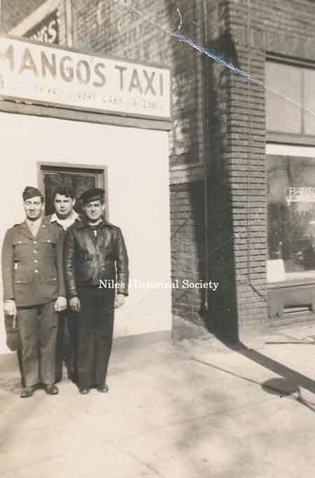
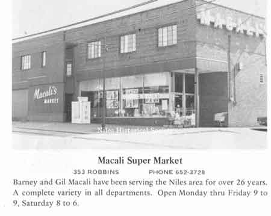

Ward-Thomas Museum


Macali Story
Ward — Thomas
Museum
Home of the Niles Historical Society
503 Brown Street Niles, Ohio 44446
Click here to become a Niles Historical Society Member or to renew your membership
Click on any photograph to view a larger image, click on image again to zoom into photograph.
The Macali Family Story. Both Gilbert and Palmer (Barney) Macali have been affiliated with grocery stores since each was ten years old. Gilbert and Barney parlayed their profound years of experience in the grocery field into one of the most modern super markets in the city at 353 Robbins Avenue. Gil worked as a delivery boy for Williams Grocery and then for the Frech brothers until he entered the armed forces in 1942. Gil served for over four years during WWII in varying-sized small craft of the Army Air Corps Air-Sea Rescue Service. He ended the war as a tactical sergeant assigned to a PT boat in the Panama Canal Zone. Barney began his working life at the age of ten, delivering groceries after school. The store was located on Robbins Avenue and was owned by Roy Williams. He started working in the Frech Brothers Meat Market and Grocery Store in 1940. From 1943 through 1945 he served in the United States Air Force, was stationed in England, came home in 1945. After WW II, they again worked for the Frech brothers but wanted to branch out on their own. After the deal for store on Belmont fell through, they purchased their first store 503 Robbins (formerly Anderson’s Deluxe Market) on the left side of Woodcock’s Drug Store (which is now Troutman’s Drug store at 501 Robbins Ave) in 1948. They named this store Macali’s Deluxe Market and as Woodcock’s sold candy, the Macali Deluxe Market was not allowed to sell candy. Mrs. Isabelle Coates had a candy store on the east side of Macali’s grocery store. In 1948 they opened their first store at the corner of Cedar Street and Robbins Avenue. Five years later, they launched what was to be a ‘chain of Macali Markets’ in Niles. They bought their second store at Robbins and Russell Avenues. The building at 1328 Robbins, constructed in 1920 and occupied by the Macali’s Market from 1953-1964, was run by Gil Macali. His wife and family lived in the right side of the building. The following year the Macalis opened a third store on Montclair Avenue NE in Warren. |
||
| In 1948, Barney and Gil purchased the former Anderson’s Grocery Store at 503 Robbins Avenue and celebrated their grand opening January 16, 1948. P11.388 |
Photo of Barney Macali in |
In less than 10 years, the Macali brothers opened a second store at 1328 Robbins Avenue, purchasing it from Bill Nicholas. The building at 1328 Robbins, was built in 1920 and occupied by the Macali’s Market from 1953-1964. |
 Barney Macali(l) and Mango in front of Mango's Taxi Service. |
Gil Macali in the Valu-King Store There is a third brother, Armand, who has been a member of the staff of the Macali Markets since they opened in 1948. |
The electric pony ride in front of the Macali Market store at 353 Robbins Avenue, 1958. It was in 1957 they consolidated their three stores into the new structure built for them at their present location on Robbins Avenue. In 1974 the store was expanded when the Macali brothers purchased the Pugh Brothers Hardware Store and combined the two building spaces into one larger space. The Dollar Store now occupies this building. |
|  |
It was in 1957 they consolidated their three stores into the new structure built for them at their present location on Robbins Avenue. Literally three times the size of their original store on Cedar Street, the Macali brothers were destined for further growth. The Macali Deluxe Market moved to a new location at 353 Robbins Avenue in 1974. Both Barney and Gil Macali operated this store with the Pugh Brothers Hardware store occupying one-half of the building. Twelve years later, they welcomed their large
clientele to a gala grand opening of their expanded quarters on
Robbins Avenue. They had taken over the former Pugh Brothers Hardware
property and remodeled and refurbished the 11,000 square foot
area. The newest and most modern equipment, latest in lighting
and up-to-the-minute products keeps the flow of business at a
steady pace for Macali’s Market. |
|
| In 1979, after 31 years, Barney and his brother Gil, moved into a vacant former A&P Food Market building on Vienna Avenue operating it as a Value-King franchise. |
Barney and Gil Macali will re-open their Valu-King Store on Vienna Avenue on June 24, 1984, having been closed for nearly two months after suffering $425,000 in damages due to an arson fire in April. July 16, 1984 In 1980, after 40 years of being together, the Macali brothers went into separate markets. They had their own families to consider, and needed a separate business for the younger generation of Macalis to carry on. |
Gilbert with his sons, Gil Jr. and Robert operate Macali’s Giant Eagle on Vienna Avenue. Barney and his son, Ralph, operate another grocery store in the Village Plaza where the former Fazio’s Store was located. In fact, in August of 1987, another Macali Market had opened at the Elm Road, Gretchen Plaza in Warren. The owner is P.J. Macali Jr. who is following in his father’s footsteps. |
| |
||
View of fire damage to sign of
|
Fire
Damages Niles Plaza No injuries were reported from the fire which was contained to the overhang in front of Valu King., Thrift Drug and CeConi stores.efore 6 this morning, causing smoke and water damage to at least three plaza businesses. Niles Fire Captain, Harry Biery, said no cause had been determined for the blaze which is believed to have started near a sign on top of the CeConi shoe and Clothing store. |
View of fire damage to Thrift Drug and CeConi's stores at Niles Plaza. |
|
Robert Macali in the Giant Eagle Store, holding a collapsable delivery box from the Macali Market at 503 Robbins Avenue. Gil Macali, Jr. |
Niles Daily Times January 9, 1973 In 1967 the Macali Brothers were accepted into membership in Super Market Institute (SMI), an international research and educational organization serving the food distribution industry. Both Barney and Gilbert are members of the Niles Area Chamber of Commerce and the Youngstown Grocers Association. Both Palmer and Gilbert Macali have been active in civic and community affairs. Barney served as a director of the Niles Area Chamber of Commerce and was named to the Chamber’s Ambassador Club, formed to lure new industry and business to the area. He is on the board of directors of the Trumbull County Easter Seal Society, is a director of the Dollar Savings Bank, and served as president of the Youngstown Area Grocer’s Association, where he on the Board. He is vice-president of the Ohio Retail Food Dealers. A successful fund raiser, Barney Macali served two terms as president of the Niles Community and head of the Community Chest Drives. He is past president of the Niles Kiwanis Club and is a member of the Niles YMCA where he also co-chaired a fundraising drive. Barney Macali was also a co-chairman for the drive to build Our Lady of Mount Carmel Rhodes Avenue School. He is also a member of the Trumbull County Catholic Social Services where he has served on the Advisory Board. As a member of the Niles Area Chamber of Commerce and a director, he has also served as chairman of the Chamber's Annual Golf Outing. Married to the former Ann Lorenzetti,
they are parents of four children: Ralph, Paula, Palmer Jr.
and Maribeth. They are members of Our Lady of Mount
Carmel church. |
Niles Daily Times January 9, 1973 Gilbert Macali, Sr. Golf is his active sport; football his spectator sport, and in the latter he category he’s a member of The Frontliners, the booster organization of his alma mater’s football team. Gilbert, the older brother, served as President of the Civil Service Commission before resigning due to the demands of an expanding business. He also served as President of the Rotary Club and is a member of the Frontliner’s Club. He was a member of the Niles Historical Society, Friends of the Library, Trustee Circle of the Butler Institute of American Art and Stambaugh Pillars. He received a Governor’s award and was honored by the State General Assembly as an Ohio Outstanding School Volunteer Partner. Gil was honored by the Chamber of Commerce as Merchant of the Year and as a Partner in Education, and received the Giant Eagle Corporate Award for community involvement. He was a member of the Ohio Grocer’s Association. He was inducted into the McKinley High School Alumni Hall of Fame in 2002. He is married to the former Dolores Lapolla, daughter of former City Streets Department Superintendent and Mrs. Sam Lapolla of Belmont Avenue. They have three children: Virginia, Gilbert
Jr. and Robert and make their home on Hogarth Avenue. |
|
|
||


{kind=link}
{kind=link}
{kind=link}
{kind=link}
{kind=link}
{kind=link}
{kind=link}
{kind=link}
{kind=link}
{kind=link}